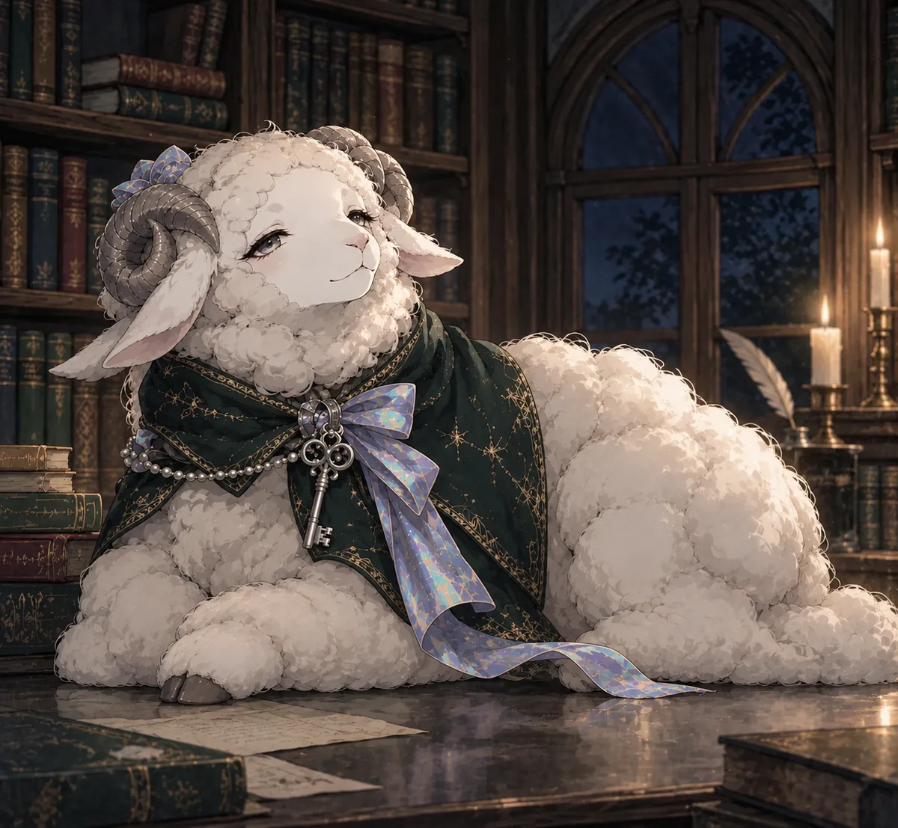
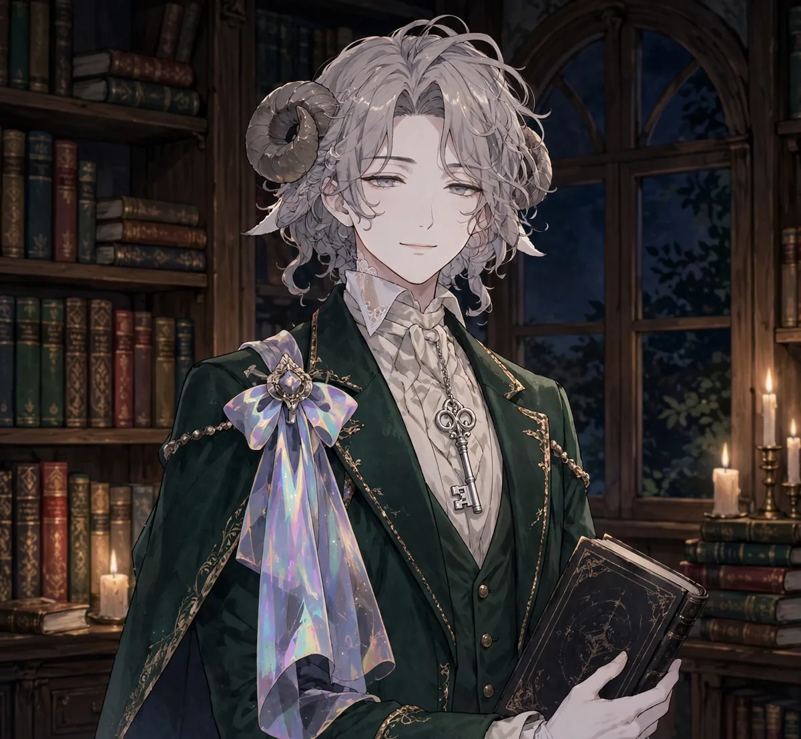

企画中販売はまだ始まっていません
声で聴く「寝る前5分」
フリーの声優さんに朗読をお願いし、このサイトの各篇に「簡易解説」を付録として添えた音声版を、ダウンロード販売する計画です。目を閉じたまま一篇を聴き終えて、そのまま眠れる長さと声の距離感を目指します。
読み聞かせは、アワイが担当します


読み聞かせは、この書斎の番人アワイが担当します。アワイは覚醒と眠りの間（あわい）に立つ、夢と現実の境目の番人。羊のときは女性の声、執事の姿のときは男性の声で読み聞かせをしますので、お好みの声でお聴きいただけます。
アワイについて →付録「簡易解説」の中身（予定）
各篇の音声に、各作品ページの豆知識を読み物として再編集した解説を添えます。
- 作品のあらすじと読みどころ（1篇につき A4 1枚ほど）
- 言葉の注釈 ―― 旧仮名・旧字・歴史的な固有名詞
- 関連する音楽・舞台・史実への小さな案内
- 著者の略歴と、次に読むべき一篇への橋渡し